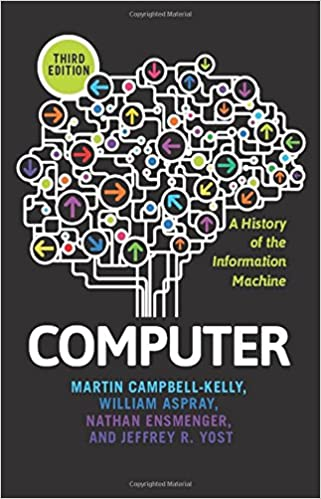
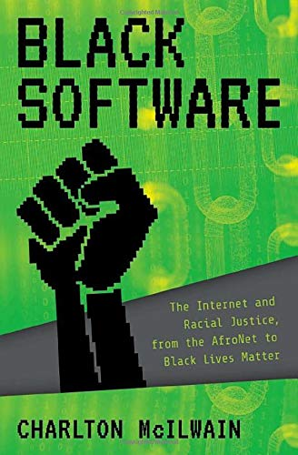

Welcome to Unit 2:
Creating the Computer
CSCI1800
Dr. Aaron Sidney Wright
asw@dal.ca

Agenda
- Overview of Unit 2
- Essay Topic 1: Schools and Education
- Essay Topic 2: Connect to Civil Rights
- Essay Topic 3: Connect to Entrepreneurs
Use these slides on your own: https://g.aaronswright.com/.
Overview of Unit 2
Use the Schedule in the Course Syllabus
(BrightSpace / Pulse Calendar is incomplete)
Unit 2 Due Dates
Recall: the Writing Process
Invention
Organization
Composition
Revision
- 5pm Tues. 6.10.20: Team Plan Unit 2
- 6pm Wed. 14.10.20: Thesis Development Short Exercise
- 5pm Mon. 19.10.20: Essay Draft
- 5pm Wed. 21.10.20: Peer-review Comments
- 5pm Fri. 23.10.20: Unit 2 Final Essay
Unit 2 Submissions
- 5pm Tues. 6.10.20: Team Plan Unit 2
- Group Assignment
- 6pm Wed. 14.10.20: Thesis Development Short Exercise
- Individual Assignment
- 5pm Mon. 19.10.20: Essay Draft
- Start Discussion thread in T# Discussions > Unit 2: Post your Drafts and Peer Comments
- 5pm Wed. 21.10.20: Peer-review Comments
- Reply in T# Discussions > Unit 2: Post your Drafts and Peer Comments
- 5pm Fri. 23.10.20: Unit 2 Final Essay
- Individual Assignment
Unit 2 Readings
 Campbell-Kelly et al. (2014), Chapter 4: Inventing the Computer, Chapter 5: The Computer Becomes a Business Machine, PHOTOS: From Babbage's Difference Engine to System/360 and Chapter 2: The Tech School Route from McIlwain (2020) Black Software.
Unit 2: Events, People, Inventions
- Time period: 1940s to 1960s
- New machines: ENIAC, EDSAC, UNIVAC
- Innovations: Electronics, Architecture, Code
- New jobs: Programmer, Customer Engineer
- New computerized businesses
2. Electronics
The development of modern computing
The people, the machines, and the companies that shaped computing during and after World War II. The ENIAC
2. Modern Architecture
The first useful Stored-Program electronic computer, the EDSAC
2. Commercial Computers
The first commercial computer, UNIVAC.
Co-starred in "To Hare is Human" Merrie Melodies (1956)

2. UNIVAC
2. Who is History About?
An unknown woman builds core memory in the late 1960s. Photograph from a Raytheon Apollo 11 Press Kit. The original caption described her as a “space age needleworker.” (Shorey and Rosner, 2019)
Agenda
- Overview of Unit 2
- Essay Topic 1: Schools and Education
- Essay Topic 2: Connect to Civil Rights
- Essay Topic 3: Connect to Entrepreneurs
Use these slides on your own: https://g.aaronswright.com/.
Essay Topic 1: Schools and Education
Unit 2 CSCI1800
Dr. Aaron Sidney Wright
asw@dal.ca
Essay Topics
Each essay topic has three parts:
- Historical background
- Core essay instruction
- Required sources
Historical Background
Essay Topic 1: Core Instuction
In an essay of between 675 and 825 words, assess the role of educational institutions in the history of computing discussed in the Unit 2 readings. Your essay should address one of these questions:
- Were educational institutions the most important factor in the history of computing?
- Or, compare the Moore School to DeVry technical college: how were they similar and how were they different?
Essay Topic 1: Required Sources
Your essay must use the McIlwain (2020) chapter and at least one chapter out of Campbell-Kelly et al. (2014) chapters 4 and 5.
Note: in the McIlwain reading, paragraphs set entirely in italic type are quotes.
Essay Topic 1: Schools and Education
Each essay topic has three parts:
- Historical background
- Core essay instruction
- Required sources
Essay Topic 2: Connect to Civil Rights
Unit 2 CSCI1800
Dr. Aaron Sidney Wright
asw@dal.ca
Essay Topics
Each essay topic has three parts:
- Historical background
- Core essay instruction
- Required sources
Historical Background
Historical Background: Civil Rights
- Struggle for social justice by and for African Americans (mostly 1950s and 60s)
- Laws: Civil Rights Acts: 1957, 1960, 1964 (employment), 1968 (housing), Voting Rights Act 1965. 24th Amendment to US Consitution
- Court decisions: Brown v Board of Education (1954), Loving v Virginia (1967)
- Overview: Wikipedia
Historical Background
Historical Background
Essay Topic 2: Core Instuction
In an essay of between 675 and 825 words, compare Murrell's story and IBM history to a contemporary (twenty-first century) story about Black, Indigenous, or People of Colour experience working for a tech company. Assess what has changed from Murrell's time at IBM to today, and what has remained the same.
When you assess a historical change, you evaluate it, or judge its quality: is it all different? mostly different? half way? mostly new? all new?
Essay Topic 2: Required Sources
This question is about the past and it is about the present. In your essay, use material from McIlwain (2020) to provide data about the Civil Rights Era. Optionally, listen to an interview with McIlwain.
To provide data about BIPOC at a contemporary tech company, find one article about them.
The article must follow the guidelines in the syllabus. It must: be in English; be available to the teaching team; and be published in 2020 in a reputable publication (newspaper, magazine, broadcaster, try searching the Dal library for online access, for example). Each student writing this essay should find their own article.
Essay Topic 2: Connect to Civil Rights
Each essay topic has three parts:
- Historical background
- Core essay instruction
- Required sources
Essay Topic 3: Connect to Entrepreneurs
Unit 2 CSCI1800
Dr. Aaron Sidney Wright
asw@dal.ca
Essay Topics
Each essay topic has three parts:
- Historical background
- Core essay instruction
- Required sources
Historical Background
Historical Background
![The document was created in 1946 by Eckert and Mauchly after they resigned from the University of Pennsylvania Moore School of Engineering, five weeks after unveiling the ENIAC. This is the first instance of the creation of a business plan to commercially sell electronic computers. The first three pages of the document describe their new company's object, which was 'to design and develop a multi-purpose rapid computing machine of moderate cost' (p.1) for use in both scientific and business environments. They conjectured that they would be able to market such a machine for less than $30,000. Page four lists five company names then under consideration (Electronic Control Company is second); this is followed by the company's 'Statement of Purpose,' and by a three page list, of 'the extend and variety of devices and equipment which are now foreseen as subjects of possible developments or improvement by the engineering and research work of the proposed company..](../img/Unit2/EMCCbusinessPlanCHM1.jpg)
Essay Topic 3: Core Instuction
In an essay of between 675 and 825 words, compare Eckert and Mauchly's history to a contemporary (twenty-first century) story about tech entrepreneurs. Assess the degree to which Eckert and Mauchly's history is the same or different to a contemporary case. Consider at least one of the following aspects of their story:
- Their relationship to the government and the military;
- Their relationship to academics and researchers; or
- Their relationship to established companies, like IBM or Remington Rand.
Essay Topic 3: Required Sources
This question is about the past and it is about the present. Your essay must use at least one chapter out of the Campbell-Kelly et al. (2014) chapters 4 and 5.
To provide data about an entrepreneur (or entrepreneurs) at a contemporary tech company, find one article about them.
The article must follow the guidelines in the syllabus. It must: be in English; be available to the teaching team; and be published in 2020 in a reputable publication (newspaper, magazine, broadcaster, try searching the Dal library for online access, for example). Each student writing this essay should find their own article.
Essay Topic 3: Connect to Entrepreneurs
Each essay topic has three parts:
- Historical background
- Core essay instruction
- Required sources
Thank you for watching!
Dr. Aaron Sidney Wright
CSCI1800 Fall 2020
Use these slides on your own: https://g.aaronswright.com/.